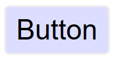
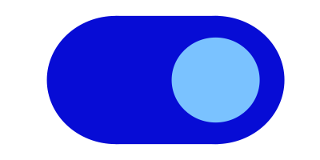
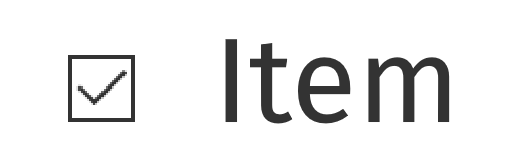
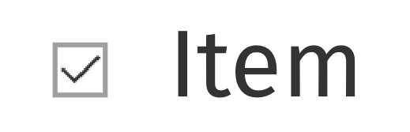
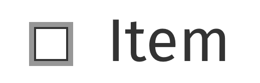

意図
この達成基準の意図は、アクティブなユーザインタフェース コンポーネント (つまり、コントロール) 及び意味のあるグラフィックが中程度のロービジョンの人によって識別できるようすることである。この必須要件の根拠は、コントラスト (最低限) の大きな文字のものと同様である。
低いコントラストのコントロールは知覚するのが難しく、かつ視覚障害のある人に完全に見逃される可能性がある。同様に、ウェブページのコンテンツ又は機能を理解するためにグラフィックが必要とされる場合、コントラストを強化する支援技術の必要なくロービジョン又は他の障害のある人に知覚されるべきある。
アクティブなユーザインタフェース コンポーネント
アクティブなコントロールの場合、利用者がコントロールが存在すること及び操作方法を識別するために必要な提供されたあらゆる視覚情報は、隣接している色と最低でも 3:1 のコントラスト比がなければならない。また、コンポーネントが選択されている又はフォーカスされているといった状態を示すために必要なあらゆる視覚情報も、その状態のコントロールを識別するために使用された情報が最低でも 3:1 のコントラスト比を持つようにしなければならない。
この達成基準は互いが隣に現れない時、個別のコンポーネントの状態を区別する色の変化が 3:1 のコントラスト比を満たすことを求めない。例えば、訪問済みのリンクがデフォルトの色と対照する、又はマウスホバーインジケータがデフォルトの状態と対照する新しい必須要件はない。しかし、コンポーネントは隣接している色とコントラストを失ってはならず、かつチェックボックス内のチェック、又はメニューが選択されているもしくは開いていることを表す矢印のグラフィックなどの非テキストインジケータは隣接している色に対して十分なコントラストがなければならない。
境界
この達成基準はコントロールにヒット領域を示す視覚的な境界が存在することを求めないが、コントロールの視覚的インジケータがコントロールを識別する唯一の方法である場合、そのインジケータは十分なコントラストがなければならない。ボタン内のテキスト (もしくはアイコン) 又はテキスト入力内のプレースホルダーテキストが可視であり、かつヒット領域の視覚的なしるしがない場合、達成基準に合格する。テキストボタンに色つきのボーダーもある場合、ボーダーはしるしだけを提供しないため、テキストのコントラスト (1.4.3 コントラスト (最低限)) を越えるコントラストの要件はない。認知障害のある人には、コントロールを認識するため、ひいては動作の完了のための支援をするために、コントロールの境界の輪郭を描くことが推奨されることに注意する。

隣接している色
ユーザインタフェース コンポーネントの「隣接している色」とは、コンポーネントに隣接している色を意味する。例えば、入力に白い内側の背景、濃いボーダー、及び白い外側の背景があった場合、コンポーネントの「隣接している色」は白い外側の背景になる。

コンポーネントが複数の色を使用している場合、コントラスト比を測定する目的で、コンポーネントの識別に干渉しない色は無視できる。例えば、入力の 3D ドロップシャドウ、又は対照的な背景間の暗いボーダーは、明るさ (知覚される輝度) に最も近い色に含まれていると見なされる。
次の例は、内側に明るい背景があり、周囲に暗い背景がある入力を示している。入力には、暗い背景に含まれていると見なされる暗い灰色のボーダーもある。このボーダーはコンポーネントの識別に干渉しないため、コントラスト比は白の背景と濃い青の背景の間で取得される。

チェックボックスのチェック又はスライダーのつまみなど、状態を特定するために必須の視覚情報には、その部分はコンポーネント内にあるかもしれず、そのため隣接している色はコンポーネントの別の部分かもしれない。

ステータスインジケータがコンポーネントを埋め、かつコンポーネントと対照しないが、コンポーネントと隣接している色と対照するようなフラットなデザインを使用することは可能である。

色の使用とフォーカスの可視化との関係性
色の使用という達成基準は、オブジェクトの形を一切変えずにオブジェクト又はテキストの色のみ (色相) を変更することを取り上げている。この原則は、コントラスト比 (明るさの差) がテキスト又はグラフィックを区別するために使用できるということである。例えば、G183: 色が単独でリンク又はコントロールを特定する場所で、周囲のテキストと一緒に 3:1 のコントラスト比を使用し、そのリンク又はコントロールのフォーカスに追加の視覚的な手がかりを提供するは周囲のテキストと 3:1 のコントラスト比を使用してリンク及びコントロールを区別する達成方法である。この場合、ワーキンググループは、テキストがリンクであることを伝えるために色 (色相) だけでなくコントラスト比にも依存しているため、リンクではないテキスト色に対して 3:1 のコントラスト比を満たすリンクの色は達成基準 1.4.1 色の使用を満たすと考える。
例えばそれぞれの星が黄色 (満ちている) 又は白 (空いている) のいずれかで埋まった黒いアウトラインをもつ 1-5 のスターインジケータなど、入力の値又は状態を伝えるために色相の違いのみを使用するコントロール内の非テキスト情報は、この基準よりも色の使用の基準に失敗する可能性がある。


フォーカス及び他の状態にコントラストの変化を使用することは状態を区別する方法である。これは G195: コンテンツ制作者が提供する視認性に優れたフォーカスインジケータを使用するの基礎であり、かつより多くの達成方法が追加されている。
2.4.7 フォーカスの可視化と組み合わせて、コンポーネントがフォーカスされている時に、そのコンポーネントの視覚的なフォーカスインジケータは、隣接している背景に対して十分なコントラストがなければならない。ただし、コンポーネントの見た目がユーザエージェントにより決定されており、かつコンテンツ制作者により変更されていない場合を除く。
この達成基準は、コントロールのフォーカスされた状態とフォーカスされていない状態を直接比較しないことに注意すること。フォーカス状態が色の変化 (例:ボタンの背景色のみを変更する) に依存している場合、この達成基準は、二つの状態間のコントラストの違いに関する要件を定義していない。
アクティブなユーザインタフェース コンポーネントの例
はっきりと知覚される必要のあるフォーカスインジケータ、選択インジケータ、及びユーザインタフェース コンポーネントをデザインするため、次の例には十分なコントラストがある。
| タイプ | 説明 | 事例 |
|---|---|---|
| リンクテキスト | 既定のリンクテキストは 1.4.3 コントラスト (最低限)のスコープに含まれ、かつ下線はリンクを示すのに十分である。 |  |
| 既定のフォーカススタイル | リンクにはフォーカスインジケータが存在することが 2.4.7 フォーカスの可視化により求められている。ユーザエージェントのフォーカススタイルが (リンク、フォームフィールド、又はボタンなどの) インタラクティブなコントロールにおいて変更されていないところでは、既定フォーカススタイルは十分である。 |  |
| ボタン | 位置、テキストスタイル、コンテキストなどの識別インジケータがあるボタンは、ボタンであることを示すために対照的な視覚インジケーターを必要としないが、一部の利用者は、コントラスト要件をより簡単に満たすアウトラインでボタンを識別する可能性がある。 |  |
| テキスト入力 (最小限) | テキスト入力に、下部のボーダー (#767676) など、入力であることを示す視覚的なインジケータがあるところでは、そのインジケータは 3:1 のコントラスト比を満たさなければならない。 |  |
| テキスト入力 | 完全なボーダー (#767676) など、テキスト入力がインジケータを持つところでは、そのインジケータは 3:1 のコントラスト比を満たさなければならない。 | |
| テキスト入力のフォーカススタイル | フォーカスインジケータは必須である。この場合、追加の灰色 (#CCC) のアウトラインは白色 (#FFF) の背景に対して 1.6:1 の不十分なコントラストであるが、入力がフォーカスを受け取ったときに表示されるカーソル/キャレットは、十分に強い視覚的表示を提供する。 |  |
| 背景色を使用しているテキスト入力 | ボーダーがなく、かつ背景色のみで区別されるテキスト入力は隣接している背景 (#043464) に対して 3:1 のコントラスト比を持たなければならない。 |  |
| トグルボタン | トグルボタンの内部の背景 (#070CD5) は、外部の白色の背景とのコントラストが良好である。また、(#7AC2FF) 内の丸いトグルは、内部の背景と対比させる。 |  |
| ドロップダウンインジケータ | 下矢印は、ドロップダウン機能があることを理解するために必要である。濃い灰色 (#6E747B) にある白いアイコンのコントラストは 4.7:1 である。 |  |
| ドロップダウンインジケータ | 下矢印は、ドロップダウン機能があることを理解するために必要である。白の黒のアイコンのコントラストは 21:1 である。 |  |
| チェックボックス - 空 | 白色の背景上の黒いボーダーはチェックボックスを示す。/td> |  |
| チェックボックス - チェックされる | 白色の背景上の黒色のボーダーはチェックボックスを示し、黒色のチェックマークの形はチェックされた状態を示す。 |  |
| チェックボックス - 失敗 | チェックボックスの灰色のボーダーの色 (#9D9D9D) は、白色の背景の 2.7:1 のコントラスト比であり、これはチェックボックスを識別するために必要な視覚情報には不十分である。 |  |
| チェックボックス - かすかなホバースタイル | 白色の背景上の黒色のボーダーはチェックボックスを示し、マウスポインタがかすかなホバー状態をアクティブにすると、灰色の背景 (#DEDEDE) が追加される。黒色のボーダーは、灰色の背景と 15:1 のコントラスト比を持つ。 |  |
| チェックボックス - かすかなホバースタイル - 失敗 | フォーカスインジケータが必要である。フォーカスインジケータがコンテンツ制作者によってスタイル設定されている場合、隣接する色との 3:1 のコントラスト比を満たさなければならない。この場合、灰色 (#AAA) インジケータのコントラスト比は隣接する白色 (#FFF) の背景に対して 2.3:1 と不十分である。 |  |
アクティブではないユーザインタフェース コンポーネント
利用者とのインタラクションに利用できないユーザインタフェース コンポーネント (例:HTML で無効化されたコントロール) は WCAG 2.1 ではコントラストの要件を満たすことを求められていない。アクティブではないユーザインタフェース コンポーネントは可視だが、現在は操作可能ではない。例としては、可視だが、フォームのすべての必須のフィールドに記入されるまで有効化できないフォームの下部にある送信ボタンがある。

HTML の無効化されたコントロールなどのアクティブではないコンポーネントは利用者とのインタラクションに利用できない。アクティブではないコントロールをコントラストの要件から免除するという判断は、多数の考察に基づく。アクティブでないコントロールを識別することは一部の人にとって有益であるが、汎用的な解決策を制定することは非常に困難だった。無効化されたコントロールにアイコンを追加するなど、利用者の設定に応じて無効化されたコントロールを様々に提示する方法が将来の発展として期待されている。
グラフィカルオブジェクト
「グラフィカルオブジェクト」という用語は、(テキストのない) 印刷アイコンなどの独立したアイコン及びグラフの各線などのより複雑な図の重要な部分に適用される。単一色のアイコンなどの単純なグラフィックの場合、画像全体がグラフィカルオブジェクトになる。複数の線、色、及び形で形成された画像は複数のグラフィカルオブジェクトで形成されており、それらのいくつかは理解するのに必要である。
すべてのグラフィカルオブジェクトが周囲を対照することが必要なわけではない - グラフィックが伝えていることを利用者が理解するのに必要なもののみである。Gestalt principles の「連続性の法則」などは他のグラフィカルオブジェクト又は色の軽微な重なりを無視するために使用できる。
| 画像 | 注記 |
|---|---|
電話のアイコンはオレンジ (#E3660E) の円の中にある単純な形である。この意味はアイコン単体から理解でき、円の後ろにある背景は重要ではない。オレンジの背景及び白いアイコンは 3:1 以上のコントラストがあり、合格する。 グラフィカルオブジェクトは白い電話のアイコンである。 |
|
 |
マグネットは薄く色づけられた先端と「U」という形により理解できる。そのため、このグラフィックを理解するには、(背景に対して) 全体の形及び (その他の U の形及び背景に対して) 薄く色づけられた先端を理解できるべきである。 グラフィカルオブジェクトは (アウトラインによる、又はベタ塗りの赤色 #D0021B による) 「U」という形及びマグネットの各先端である。 |
 |
通貨 (£) が下がっていることを示す記号は、外形 (下向き矢印) 及び通貨記号 (グラフィックの一部である外形とポンドアイコン) を識別することにより理解することができる。このグラフィックを理解するには、白い背景に対して矢印の形、及び黄色い背景 (#F5A623) に対してポンドアイコンを理解する必要がある。 グラフィカルオブジェクトは外形及び通貨記号である。 |
 |
グラフを理解するためには、各条件の線及び外形を理解する必要がある。チャートに沿った各線の値を認識するには、目盛りの 100 きざみの値を示す灰色の線を識別する必要がある。 グラフィカルオブジェクトは値のための背景の線を含むグラフ内の線、及び形と色つきの線である。 線には背景に対して 3:1 のコントラストがあるべきだが、それらの他の線との重なりは小さいため、それぞれ又は目盛り付きの線と対照しなくても良い。(以下の検証の原則を確認すること。) |
 |
円グラフを理解するためには、円グラフの各扇形を他と区別する必要がある。 グラフィカルオブジェクトは円 (グラフ) の各扇形である。 注記:もし円グラフの扇形の値が適合する方法で提示されていた場合 (詳細は円グラフの例を参照)、扇形は理解するのに必要ではない。 |
上記のマグネット画像を例にとると、グラフィカルオブジェクトを定める過程は:
- 画像が何を表しているかを理解するために、各画像のどの部分が必要かを評価する。
マグネットの「U」という形はアウトライン又は赤い背景で伝えることができる (どちらも条件を満たしている)。白い先端も重要であり (そうでなければ馬蹄になってしまう)、赤い背景と対照する必要がある。 - 利用者がそれらの特徴しか見られないと仮定する。それらは隣接している色と対照するか？
マグネットのアウトラインは周囲のテキスト (黒／白) と対照し、かつ先端の赤及び白も十分なコントラストがある。
赤と白の強いコントラストにより、マグネットの白い先端の周りのみにアウトラインをつけることも可能であり、それでも適合する。
理解するのに必要
「理解するのに必要」という用語は、多くのグラフィックがコントラストの要件を満たさなくて良いため、達成基準の中で使用されている。もし人がコンテンツを理解するためにグラフィック、又はグラフィックの一部 (グラフィカルオブジェクト) を知覚する必要がある場合、それは十分なコントラストを持つべきである。しかし、これは次の場合は必須要件ではない:
ラベル及びチャート内の値など、グラフィックに埋め込まれた又は重ねられたテキストが同じ情報を伝えている。
注記グラフィック内のテキストは 1.4.3 コントラスト (最低限) を満たさなければならない。
- グラフィックが見栄えのためにあり、利用者にコンテンツを理解するため又は機能を使用するために見る又は理解することを求めない。
- 「長い説明」ボタンを押下すると表示されるグラフに続く表など、情報が他の形式で提供されている。
- グラフィックはロゴ又はブランド名の一部である (その提示にとって「必要不可欠」と考えらえている)。
グラデーション
グラデーションは領域間の見かけのコントラストを減らすことができ、かつ検証をより困難にする。一般的な原則としては、理解するのに必要なグラフィカルオブジェクトを特定し、その領域の中央の色をとることである。もし十分なコントラストのない隣接している色を取り除いても、まだグラフィカルオブジェクトを特定しかつ理解することができるのか？

動的な例
いくつかのグラフィックはコントラストを変更する、又は各グラフィカルオブジェクトにマウスオーバー／タップ／フォーカスをすると情報をテキストとして表示する、いずれかのインタラクションがあるかもしれない。人がグラフィックが存在することを認識するためには、グラフィックを見つけるために対照する色又はテキストがなければならない。その領域内では、適合する方法 (例:フォーカス可能な要素) で提供されている情報は動的なテキスト、又は動的にコントラストを増加して、その情報を提供するために使用できる。

インフォグラフィック
インフォグラフィックはチャート又は図など、データを伝えるあらゆるグラフィックを意味することができる。ウェブではよくたくさんの意見、絵、チャート、又は他のデータを伝える方法を含む大きなグラフィックを示すために使われている。グラフィックのコントラストの文脈では、そのようなインフォグラフィック内の各アイテムは、一つのファイルか個別のファイルかにかかわらず、一連のグラフィカルオブジェクトとして扱われるべきである。
インフォグラフィックはよく、以下を含む WCAG レベル AA の基準を満たすことに失敗する:
インフォグラフィックは、理解するのに必要なグラフィカルオブジェクトの数を最小限にするために、他の基準を満たすテキストを使用することができる。例えば、チャート内の値を提供するために、十分なコントラストのテキストを使用する。インフォグラフィックが理解のために依存されなくなるため、長い説明でも十分だろう。
必要不可欠な例外
グラフィカルオブジェクトは、「グラフィック特有の提示が、情報を伝えるうえで必要不可欠」な場合、コントラストの要件を満たす必要はない。必要不可欠の例外は、意味を損なわずに十分なコントラストのグラフィックを提示する方法がない場合に適用することを意図している。例えば:
- ロゴタイプ及び旗:組織又は製品のブランドのロゴはその組織の象徴であるため、免除する。旗は、十分なコントラストを持つために色が変更された場合、識別できないかもしれない。
- 感覚的:人又は風景の写真などの現実の場面の絵を変更するという必須要件はない。
- 他のものを表している:グラフィックを他のどの方法でも表現できない場合、それは必要不可欠である。例に含まれるのは:
- ウェブサイトがどのように表示されていたかを明示するスクリーンショット。
- 生物学で見られる色を使用した医療情報の図 (Wikipediaの医療的な図解の例)。
- ヒートマップなどの、測定結果を表す色のグラデーション (Wikipediaからのヒートマップの例)。
{kind=link}
{kind=link}
検証の原則
ウェブページの非テキストグラフィックを見つける及び評価するための上層工程の概要:
- ページ内の各ユーザインタフェースコンポーネント (リンク、ボタン、フォームコントロール) を特定する。及び:
- コントロールが存在することを特定するために必要とされているコンポーネントの視覚的な (非テキストの) 目安を特定し、かつ現在の状態を示す。規定 (ページロード時) の状態では、隣接している色に対してコントラスト比を検証する。
- それらのコントラストの目安を各状態で検証する。
- ページ内のコンテンツを理解するのに必要な情報を含む各グラフィックを特定する (つまり、同じ情報の可視テキストを含む、又は装飾的なグラフィックは除外する)。及び:
- 隣接している色に対してグラフィカルオブジェクトのコントラストを確認する。
- もし複数の色及び／又はグラデーションがある場合、最もコントラストが低い箇所を選択して検証する。
- 合格の場合、次のグラフィカルオブジェクトに移動する。
- もし最もコントラストが低い領域が 3:1 を下回る場合、その領域が非可視であると仮定して、グラフィカルオブジェクトはそれでも理解できるか？
- グラフィカルオブジェクトを理解するのに十分な場合、合格する。そうでなければ、失敗する。
以下の達成方法はそれぞれ検証基準があり、かつフォーカスの可視化 (2.4.7)、色の使用 (1.4.1)、及びコントラスト (最低限) の関連する基準にも達成方法がある。
メリット
ロービジョンの人は不十分なコントラストのグラフィックを知覚するのが困難なことがよくある。これは、コントラストをさらに低下させる色覚異常がある人の場合、深刻となりえる。3:1 又はそれ以上の相対輝度 (明るさの違い) を提供することで、その人があらゆる色を見ることができなくても、これらの項目をさらに識別しやすくする。
事例
- アプリケーションのダッシュボードにある (関連しているテキストのない) ステータスアイコンには 3:1 の最低限のコントラスト比がある。
- テキスト入力には白い編集可能領域の周りに濃いボーダーがある。
- グラフは薄い背景を使用し、各線の色が背景に対して 3:1 のコントラスト比を持つようにしている。
円グラフ
円グラフはこの達成基準のグラフィカルオブジェクトに関する部分の良いケーススタディになる。次の円グラフは、ブラウザの市場シェアの割合を伝えることを意図している。実際の数字は作られたものであり、これらは実際の市場シェアではないことに注意いただきたい。

図 11 失敗:円グラフには各扇形にラベルがついている (そのため、1.4.1 色の使用は合格する) が、扇形の割合を理解するためには、その扇形の縁 (必要不可欠な情報を伝えるグラフィカルオブジェクト) を認識しなければならず、かつ各扇形間のコントラストは 3:1 又はそれ以上ではない。

図 12 非適用:円グラフには可視ラベル及び値があり、グラフィカルオブジェクト (円の扇形) の同等の情報を伝えている。
図 13 合格:円グラフには可視ラベルがあり、かつ十分なコントラストが円グラフの扇形 (グラフィカルオブジェクト) の周囲及び間にある。コントラストレベルを得るために、さらに濃いボーダーが黄色い扇形の周りに追加されている。
インフォグラフィック

図 14 失敗:ネットワークのサイズを理解するために円を識別する必要があり、かつどのネットワークを表しているかを識別するために各円の中のアイコンを区別する必要がある。
グラフィカルオブジェクトは (背景に対して測定される) 円及び (円の背景に対して測定される) 各円の中のアイコンである。

図 15 合格:円には対照するボーダーがあり、かつアイコンは薄い円の背景に対して対照する濃い色である。
コントラストを確保するためのたくさんの可能な解決策があり、例ではボーダーの使用を表している。他の達成方法には、円の背景により濃い色を使用する、又は各項目にテキストラベル及び値を追加することがある。
関連リソース
リソースは、情報提供のみを目的としており、推奨を意味するものではない。
- Accessibility Requirements for People with Low Vision.
- Smith Kettlewell Eye Research Institute - "If the text is better understood with the graphics, they should be equally visible as the text".
- Gordon Legge - "Contrast requirements for form controls should be equivalent to contrast requirements for text".
達成方法
この節にある番号付きの各項目は、WCAG ワーキンググループがこの達成基準を満たすのに十分であると判断する達成方法、又は複数の達成方法の組み合わせを表している。しかしながら、必ずしもこれらの達成方法を用いる必要はない。その他の達成方法についての詳細は、WCAG 達成基準の達成方法を理解するの「その他の達成方法」を参照のこと。
十分な達成方法
そのコンテンツに合致する状況を以下から選択すること。それぞれの状況には、WCAG ワーキンググループがその状況において十分であると判断する、番号付の達成方法 (又は、達成方法の組み合わせ) がある。
状況 A: 色は、ユーザインタフェース コンポーネントを識別するために使用される、又はユーザインタフェース コンポーネントの状態を識別するために使用される
状況 B: 色はグラフィカルコンテンツを理解するために必須である
失敗例
以下に挙げるものは、WCAG ワーキンググループが達成基準の失敗例とみなした、よくある間違いである。
重要な用語
(L1 + 0.05) / (L2 + 0.05) ここでは、
コントラスト比は、1～21 の範囲になりうる (通常は、1:1～21:1 と記述される)。
コンテンツ制作者は、テキストのレンダリング (例: フォントのスムージングやアンチエイリアス) に関する利用者の設定を制御できないため、アンチエイリアスをオフにした状態でテキストのコントラスト比を評価してもよい。
達成基準 1.4.3 及び 1.4.6 の目的上、コントラストは通常の使用においてテキストがレンダリングされるときに指定されている背景色に対して測定する。もし背景色の指定がない場合は、背景色には白を想定する。
背景色は、テキストが通常の使用においてレンダリングされるときに背景となるコンテンツの色として指定された色である。テキストの色は指定されているが背景色が指定されていない場合、利用者のデフォルトの背景色は未知であり、コントラストが十分かどうかを評価することができないため、問題がある。同じ理由で、背景色が指定されているがテキストの色が指定されていない場合も問題がある。
文字の周囲に縁取りがある場合、その縁取りがコントラストを強めることもあり、文字とその背景色におけるコントラストの計算に用いられる。文字の周囲の細い縁取りは文字として扱われる。文字の周囲の太い縁取りが、光彩のようになって、文字の内側の細部を塗りつぶしていれば、背景色として考慮されることになる。
WCAG に適合しているか判断する場合は、典型的な提示において隣接するであろうと制作者が想定するコンテンツで指定された色の組み合わせについて評価しなければならない。制作者は、ユーザエージェントによる色の変更などのように通常とは異なる提示を考慮する必要はない。ただし、それが制作者のコードによって起こる場合は除く。
もし取り除いてしまうと、コンテンツの情報あるいは機能を根本的に変えてしまい、かつ、適合する他の方法では情報及び機能を実現できない。
利用者が知覚できる形式でコンテンツをレンダリングすること。
ユーザーのアクション又は自動プロセスに応答して変化し得るユーザインタフェースコンポーネントの特性を表現する動的特性。
状態はコンポーネントの性質に影響を与えないが、コンポーネントやインタラクションの可能性に関連付けられているデータを表す。例えば、フォーカス、ホバー、選択、プレス、チェック、訪問済/未訪問、展開/折りたたみなどがある。
コンテンツの一部分で、特定の機能を実現するための単一のコントロールとして利用者が知覚するもの。
複数のユーザインタフェース コンポーネントが、単一のプログラム要素で実装されることもある。ここでいうコンポーネントは、プログラムの手法と結びついたものではなく、利用者が別々のコントロールとして知覚するものを指す。
ユーザインタフェース コンポーネントには、フォーム要素、リンクだけでなく、スクリプトで生成されるコンポーネントが含まれる。
ここでの「コンポーネント」又は「ユーザインタフェース コンポーネント」は、「ユーザインターフェース要素」とも呼ばれる。
アプレットには、コンテンツ内を行単位、ページ単位、又はランダムアクセスで移動するために用いられる「コントロール」がある。これらには、いずれも名前 (name) を割り当て、個別に設定できるようにする必要があるため、それぞれが「ユーザインタフェース コンポーネント」となる。